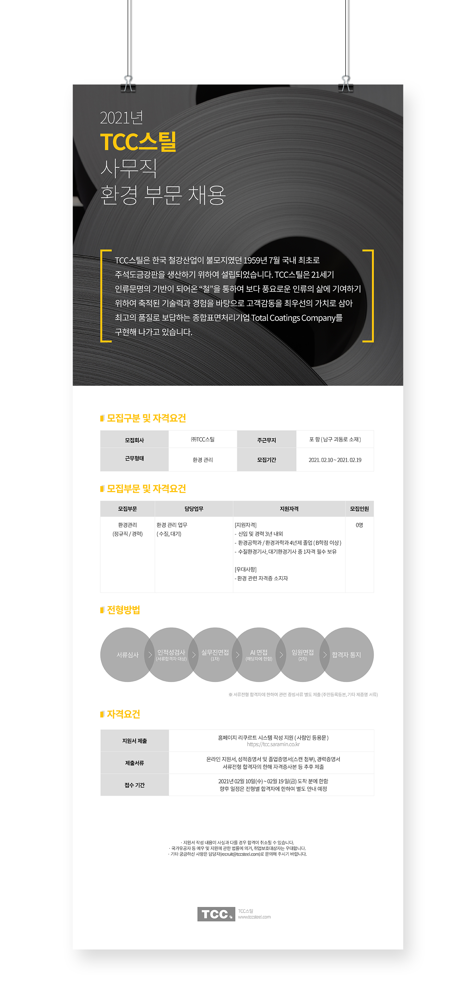

채용공고 팝업

OVERVIEW
TCCSTEEL의 생산본부 공정팀 채용공고를 위해 웹사이트와 팝업으로 사용할 이미지를 디자인하였습니다. 이 디자인은 스틸의 메인 컬러 중 하나인 그레이와 세련되게 어울리는 옐로우 컬러를 주요 컨셉으로 채택하였습니다. 이미지의 전반적인 디자인은 그레이 컬러를 기반으로 하되, 옐로우 컬러를 강조적으로 사용하여 주목성을 높였습니다. 그레이와 옐로우의 대비를 활용하여 시선을 끌고, 사용자의 관심을 끌도록 하였습니다. 또한, 세련되고 현대적인 느낌을 주기 위해 간결하고 모던한 디자인 요소를 적극 활용하였습니다. 이러한 디자인은 TCCSTEEL의 브랜드 이미지와 일관성을 유지하면서도 채용공고에 대한 사용자의 관심을 높일 수 있도록 하였습니다. 또한, 옐로우 컬러의 활용으로 긍정적이고 활기찬 이미지를 전달하여 지원자들에게 긍정적인 인상을 주도록 디자인되었습니다.
- TYPE.
- Web design
- CLIENT.
- TCC스틸
- Individual work.
- 1 Day
- 작업내역
- Photoshop, Illustrator
